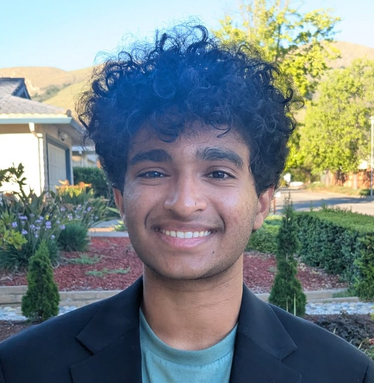

Hey there! I'm Arjun.
I'm a student researcher fascinated by mechanistic interpretability: figuring out what's actually happening inside language models.
I've worked with the Stanford NLP Group (Dr. Chen Shani) and MIT Critical Data, and research has become a real passion, one that took me to the international stage at IAI²O.
Outside of research, I love math (geometry is my favorite) and the idea of optimization. My past work on NLP and mechanistic interpretability is currently under submission to NeurIPS and AAAI.
See my research
Awards
Team USA at IAI²O
One of 59 students nationally selected to represent the US internationally, and ranked 2nd nationally.
Stanford Math Tournament (SMT)
Berkeley Math Tournament (BMT)
Research
First-Token Broadcasters
Traces first-token language identity circuits across six models (GPT-2, BLOOM-560M, Pythia-1B and 2.8B, Qwen2.5-1.5B base and instruct) using edge attribution patching and exact activation patching. With Anjelo Jann Laroza and Christian Hoang.
LIHA
The companion paper to First-Token Broadcasters, on how language identity is handled in attention heads.
Aggregated vs. per-annotator label training
Compares majority-vote and per-annotator training across 5 encoders and 5 decoders on a vaccine hesitancy dataset and ChaosNLI.
Adolescent Mental Health: LLM Retrieval Label Training
A pre-registered experiment auditing how LLMs disclose where their medical knowledge comes from, with every returned citation verified by hand.
Linguistic Echoes: Explainable NLP for Academic Stress Detection
Asks whether NLP models can recover known psycholinguistic stress markers, and whether undergrad, grad, PhD and pre-med communities express stress differently. A fine-tuned DistilBERT reached 79% accuracy (0.874 ROC-AUC) on Dreaddit, and SHAP, LIME and LIWC agreed on first-person pronouns and negative emotion. Analyzed 8,000 academic Reddit posts, with significant community differences after correction (p < 0.001).
Predicting Building Heating Load via Regularized Regression
Predicts building thermal efficiency with OLS, Ridge and Lasso regression built from scratch, including handling collinear features.
Resume
Research Intern, Stanford Artificial Intelligence Lab
- Designed a fine-tuning pipeline comparing aggregated (majority-vote) and non-aggregated (per-annotator) label training on a vaccine hesitancy stance dataset and ChaosNLI (100 annotations per example).
- Fine-tuned and evaluated 10 transformers, 5 encoders (BERT-base, RoBERTa-base, ModernBERT, NeoBERT, DeBERTa-v3-large) and 5 decoders (GPT-2, SmolLM2-135M and 360M, Pythia-160M, GPT-X2-125M), with 5-fold stratified cross-validation.
- Found RoBERTa unstable under non-aggregated labels (macro F1 std ±0.21 vs. ±0.03 elsewhere) and no consistent gain from non-aggregated training.
- Built a modular codebase with shared data loading, cross-validation, dataset and metrics utilities supporting all models and both datasets.
Student Researcher, MIT Critical Data
- Co-designed a pre-registered factorial prompt experiment auditing how LLMs disclose the provenance of the medical knowledge they generate.
- Built a codebook classifying AI-generated citations as fabricated, real with bibliographic errors, or fully accurate, refined on 10-15 pilot citations before freezing it.
- Ran a 4-tier escalating prompt protocol across multiple LLMs on adolescent mental health questions, and verified every citation by hand against PubMed, Crossref and Google Scholar.
- Double-coded with a teammate and computed Cohen's kappa, with a third teammate adjudicating disagreements.
Regression Research Lead, Independent Research
- Implemented OLS, Ridge and Lasso regression from first principles in NumPy to predict building thermal efficiency, deriving the Normal Equation and coding coordinate descent for Lasso.
- Reached 90.8% accuracy, matching scikit-learn benchmarks, on a factorial dataset of 768 building configurations and 8 geometric features.
Skills
Download PDFProjects
Lyze: Multimodal RAG Intelligence System
- Built a multimodal RAG pipeline with FastAPI and Qdrant, enabling semantic search across PDFs, images, audio and video in one 768-dimensional vector store.
- Engineered an ingestion system using LLaVA for image captioning and Whisper for audio and video transcription, so a single search works across 4 file types.
- Designed a provider-agnostic architecture supporting 4 AI backends (Ollama, OpenAI, Anthropic, Gemini) with a React + TypeScript frontend and Python REST API.
- Drew over 7k views across platforms, from the United States, India, the United Kingdom and more.
Contact
If you found anything interesting, feel free to reach out! Any feedback is appreciated :)